A geophysical tour of mid-ocean ridges
2022/04/28
ℹ️ About this tutorial
Mid-ocean ridges are the places where the oceanic crust and lithosphere are born. They are large mountain ranges in the deep ocean, stretching all around the globe and with heights rivaling that of the tallest mountains on land. Ridges are also a key part of plate tectonics, a major component of the biogeochemical cycle of the oceans, and the home of unique biological communities.
In this tutorial, we’ll study the mid-ocean ridges through the lens of geophysics. We’ll use open geophysical data (gravity, bathymetry, lithospheric age) and open-source Python tools to try to answer questions like:
- How do ridges stay so tall?
- Are they in isostatic equilibrium?
- Why do ocean basins get deeper as they age?
Along the way, we’ll also learn how to translate into code the physical models of the cooling of the lithosphere so that we can compare their predictions with our data.
Note: This tutorial was inspired by a computer-based practical lesson that I developed by the module ENVS398 Global Geophysics & Geodynamics of the University of Liverpool. Because of the Transform format, some of the more interactive components that I would do during a live in-person class were removed but there is still room for personal experimentation.
Instructions: See the GitHub repository compgeolab/transform2022 for instructions on computer setup, following the tutorial, asking questions, etc. I highly encourage everyone to experiment with the code here and explore the data in further detail after the tutorial content is over.
🐍 Import the required libraries
We’ll be using several tools from the Scientific Python stack:
import numpy as np
import matplotlib.pyplot as plt
import xarray as xr
import verde as vd
import boule
import pooch
import pygmt
import pyproj
Increase the resolution of the matplotlib images.
plt.rc("figure", dpi=200)
📈 To the data!
The data we’ll be using in this tutorial are:
Download the data
We can download all of these grids using Pooch if we know where to find them on the internet.
path_etopo1 = pooch.retrieve(
url="doi:10.5281/zenodo.5882203/earth-topography-10arcmin.nc",
known_hash="md5:c43b61322e03669c4313ba3d9a58028d",
progressbar=True,
)
path_gravity = pooch.retrieve(
url="doi:10.5281/zenodo.5882207/earth-gravity-10arcmin.nc",
known_hash="md5:56df20e0e67e28ebe4739a2f0357c4a6",
progressbar=True,
)
path_seafloorage = pooch.retrieve(
url="https://www.earthbyte.org/webdav/ftp/earthbyte/agegrid/2020/Grids/age.2020.1.GTS2012.6m.nc",
known_hash=None,
progressbar=True,
)
Load the grids
Now we can load these netCDF grids with xarray.
etopo1 = xr.load_dataarray(path_etopo1)
gravity = xr.load_dataarray(path_gravity)
seafloorage = xr.load_dataarray(path_seafloorage)
Notice that the ETOPO1 and gravity grids are co-registered (meaning that the align perfectly) since there were both created to be used together in the Fatiando a Terra FAIR data collection. But the seafloor age grid has a different resolution so the values aren’t located in the same places as the other two. We’ll have to deal with this later on.
Plot the grids
Now that we have out grids, we can plot them on maps using PyGMT.
💡 Tip: You could do the same using Cartopy and matplotlib but PyGMT is faster and has better support for map projections.
fig = pygmt.Figure()
fig.grdimage(etopo1, cmap="etopo1", shading=True, projection="W25c")
fig.basemap(frame=True)
fig.colorbar(frame='af+l"ETOPO1 relief [m]"')
fig.show()

fig = pygmt.Figure()
fig.grdimage(gravity, cmap="viridis", projection="W25c")
fig.basemap(frame=True)
fig.colorbar(frame='af+l"Gravity at 10 km height [mGal]"')
fig.coast(shorelines="white")
fig.show()
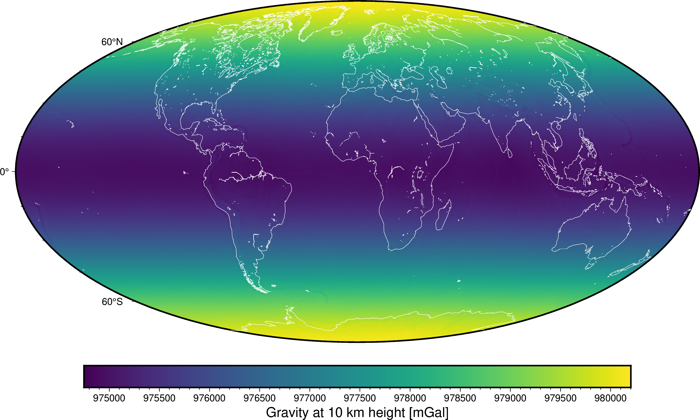
fig = pygmt.Figure()
fig.grdimage(seafloorage, cmap="inferno", projection="W25c")
fig.basemap(frame=True)
fig.colorbar(frame='af+l"Seafloor age [Myr]"')
fig.coast(shorelines=True)
fig.show()
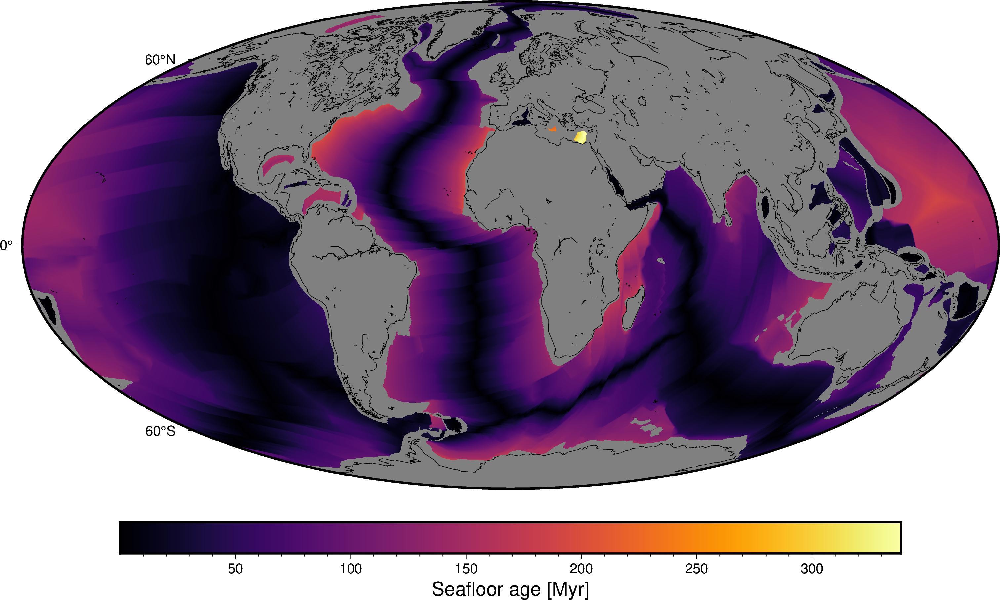
Main things to notice in these plots:
- ETOPO1 should be fairly familiar to most people. What we’ll be focusing on are the long stretches of shallow bathymetry in the oceans, like the one running in North-South in the middle of the Atlantic. These are the mid-ocean ridges.
- Gravity is the absolute value of gravity measured at a constant height of 10 km above the WGS84 reference ellipsoid. By “gravity” we mean the combined “gravitational” and “centrifugal” accelerations. The overall pattern should be familiar to most geoscientists, with stronger gravity at the poles and weaker at the equator because of both the flattening of the Earth and the centrifugal component. Notice also the dim small-scale changes that accompany large mountain ranges and subduction zones.
- Seafloor age, as expected, is younger at the mid-ocean ridges and progressively older as we move away from them. Most of the seafloor is between 0-150 Myr (a baby 👶 by geological standards) with only small sections of older lithosphere.
⛰️ Isostatic state
The first thing we’ll do is investigate the isostatic state of the mid-ocean ridges. In other words, are the ridges supported by their buoyancy (isostasy) or by other forces?
This is a job for gravity data! We know that gravity disturbances should be very small and close to zero in regions that are locally in isostatic equilibrium (following an Airy–Heiskanen or Pratt–Hayford model). If they are in equilibrium, that means that the height of the ridges is supported mostly by their buoyancy. Since we know that ridges are where the oceanic lithosphere is being created, that buoyancy can’t come from a low-density thick crustal root. So this would be evidence for a lower density asthenosphere beneath the ridges.
So let’s calculate the gravity disturbance globally to check this. The disturbance (usually shown as $\delta g$ in books/papers) is defined as:
$$ \delta g (\lambda, \phi, h) = g (\lambda, \phi, h) - \gamma (\lambda, \phi, h) $$
in which $(\lambda, \phi, h)$ are the longitude, latitude, and height above the ellipsoid, $g$ is the observed amplitude of gravity (i.e., our gravity grid), and $\gamma$ is the normal gravity (the amplitude of the gravity caused by a reference ellipsoid like WGS84).
Since we have $g$ already, we only need to calculate $\gamma$ at the same observation points. The Boule package is made exactly for this purpose:
normal_gravity = boule.WGS84.normal_gravity(
gravity.latitude, gravity.height,
)
gravity_disturbance = gravity - normal_gravity
ℹ️ Note: We don’t need to pass the longitude to WGS84.normal_gravity because the oblate ellipsoid is symmetric in that dimension and hence it’s gravity doesn’t depend on it.
Plot the gravity disturbance globally to see what it looks like:
fig = pygmt.Figure()
fig.grdimage(gravity_disturbance, cmap="polar+h", projection="W25c")
fig.basemap(frame=True)
fig.colorbar(frame='af+l"Gravity disturbance at 10 km height [mGal]"')
fig.coast(shorelines="#999999")
fig.show()
grdimage [WARNING]: Longitude range too small; geographic boundary condition changed to natural.
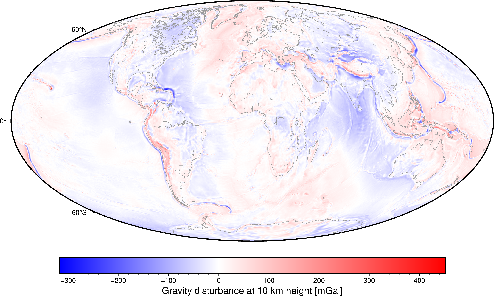
Things to note from this map:
- The disturbance is close to zero at mid-ocean ridges and most of the oceans. This indicates that the ridges and most oceanic basins are in isostatic equilibrium and supported by their buoyancy.
- Subduction zones are the main regions where the disturbance is very large, indicating that the relief we see there is due tectonic forces instead of isostasy.
- Large oceanic island chains like Hawai’i are also not supported by their buoyancy, resulting in large disturbances. Instead, these islands are kept up by the flexural strength of the oceanic lithosphere itself (i.e., a Vening Meinesz model of isostasy).
🔍 Close in on a ridge
Let’s zoom in on a particular mid-ocean ridge system in the South Pacific (a large section around the island of Rapa Nui) to study it more closely. We’ll slice our grids to this region to select that part of the data only. This is one of the many reasons why xarray is awesome!
region = (-170, -80, -65, -10) # W, E, S, N
disturbance_pacific = gravity_disturbance.sel(
longitude=slice(region[0], region[1]),
latitude=slice(region[2], region[3]),
)
etopo1_pacific = etopo1.sel(
longitude=slice(region[0], region[1]),
latitude=slice(region[2], region[3]),
)
seafloorage_pacific = seafloorage.sel(
lon=slice(region[0], region[1]),
lat=slice(region[2], region[3]),
)
Make some maps of the sliced grids:
fig = pygmt.Figure()
fig.grdimage(etopo1_pacific, cmap="etopo1", projection="M25c")
fig.basemap(frame=True)
fig.colorbar(frame='af+l"ETOPO1 relief [m]"')
fig.show()
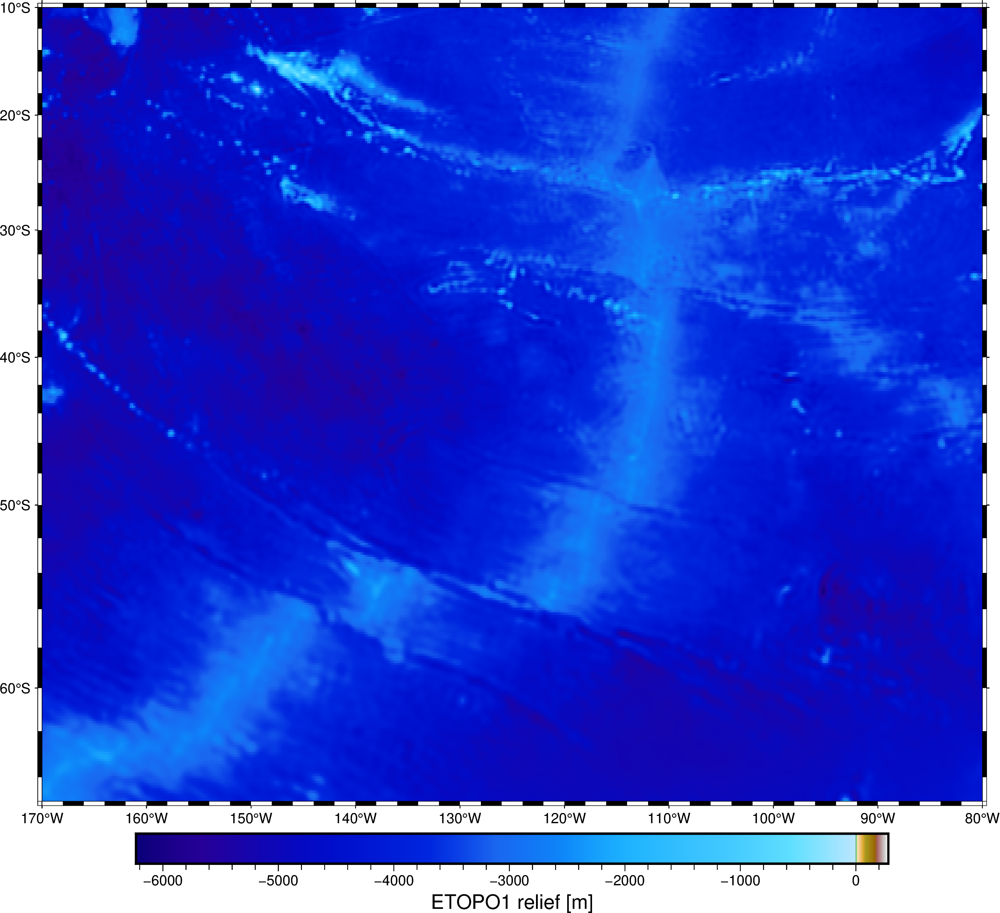
fig = pygmt.Figure()
fig.grdimage(disturbance_pacific, cmap="polar+h", projection="M25c")
fig.basemap(frame=True)
fig.colorbar(frame='af+l"Gravity disturbance at 10 km height [mGal]"')
fig.show()
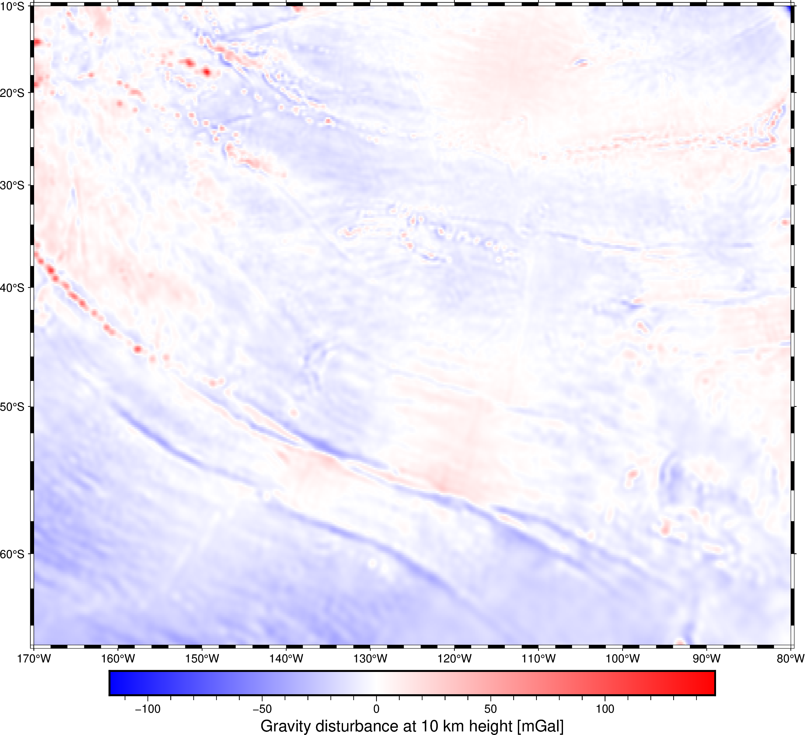
fig = pygmt.Figure()
fig.grdimage(seafloorage_pacific, cmap="inferno", projection="M25c")
fig.basemap(frame=True)
fig.colorbar(frame='af+l"Seafloor age [Myr]"')
fig.show()
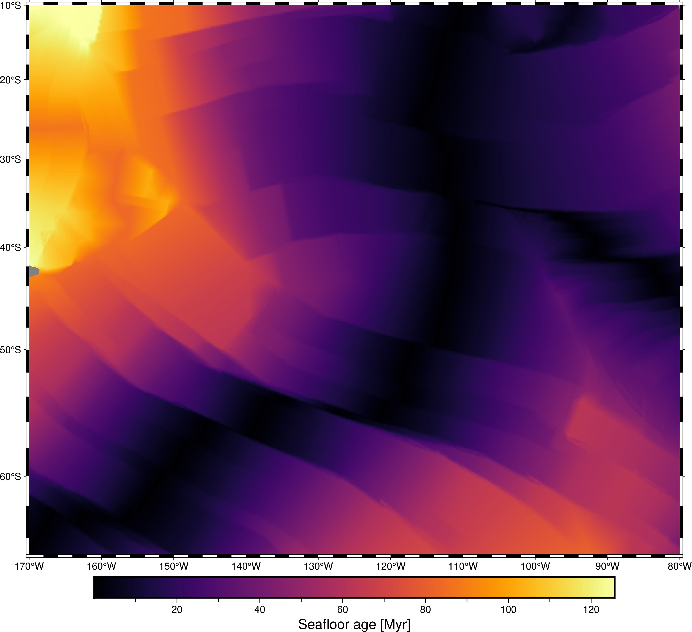
Things to note on these maps:
- There is a triple junction in there with 2 mid-ocean ridges meeting (it’s clear from the age grid).
- This region is roughly in isostatic equilibrium, except for a few island chains and fracture zones.
💆🏾♂️ Prepare the data
Remember how I said we’d have to deal with the fact that the grids aren’t aligned? That time is now!
We’ll want to compare the age and bathymetric data, making cross-plots of these values and trying to model the bathymetry as a function of age. To do this, we need bathymetry and age values at the exact same points.
This is how we’ll do it:
- Project the 2 grids so we can work in Cartesian coordinates (makes interpolation and down-sampling a bit easier).
- Down-sample the age grid to roughly 10 arc-minutes resolution.
- Interpolate the age values onto the same points as the bathymetry grid.
First, project the grids using Verde.
projection = pyproj.Proj(
proj="merc",
lat0=etopo1_pacific.latitude.mean(),
)
etopo1_pacific_proj = vd.project_grid(
etopo1_pacific, projection, method="nearest",
)
seafloorage_pacific_proj = vd.project_grid(
seafloorage_pacific, projection, method="nearest",
)
/home/leo/bin/conda/envs/default/lib/python3.9/site-packages/verde/base/base_classes.py:463: FutureWarning: The 'spacing', 'shape' and 'region' arguments will be removed in Verde v2.0.0. Please use the 'verde.grid_coordinates' function to define grid coordinates and pass them as the 'coordinates' argument.
warnings.warn(
/home/leo/bin/conda/envs/default/lib/python3.9/site-packages/verde/base/base_classes.py:463: FutureWarning: The 'spacing', 'shape' and 'region' arguments will be removed in Verde v2.0.0. Please use the 'verde.grid_coordinates' function to define grid coordinates and pass them as the 'coordinates' argument.
warnings.warn(
Now we can down-sample the age grid to roughly 10 arc-minute resolution. We’ll first need to convert the grid into a set of points, then we can take the mean values inside 10 arc-minute blocks. By doing this block reduction instead of simply taking every-other point, we avoid issues with aliasing.
age_table = vd.grid_to_table(seafloorage_pacific_proj).dropna()
# 10 / 60 = 10 arc-minutes, 111 km is roughly the arc of a degree
blockmean = vd.BlockReduce(np.mean, spacing=10 / 60 * 111e3)
coordinates_age, mean_age = blockmean.filter(
coordinates=(age_table.easting, age_table.northing),
data=age_table.z,
)
Finally, we can now interpolate the age data onto the same points as the bathymetry grid.
interpolator = vd.ScipyGridder(method="nearest")
interpolator.fit(coordinates_age, mean_age)
grid = interpolator.grid(
coordinates=(
etopo1_pacific_proj.easting,
etopo1_pacific_proj.northing,
),
data_names=["seafloorage"],
)
Now we can merge the bathymetry grid into the grid variable (a xarray.Dataset) for easier manipulation.
grid = xr.merge([grid, etopo1_pacific_proj])
Plot some maps of these two grids:
fig = pygmt.Figure()
fig.grdimage(grid.seafloorage, cmap="inferno", projection="X25c")
fig.basemap(frame=True)
fig.colorbar(frame='af+l"Seafloor age [Myr]"')
fig.show()
fig = pygmt.Figure()
fig.grdimage(grid.topography, cmap="etopo1", projection="X25c")
fig.basemap(frame=True)
fig.colorbar(frame='af+l"ETOPO1 [m]"')
fig.show()
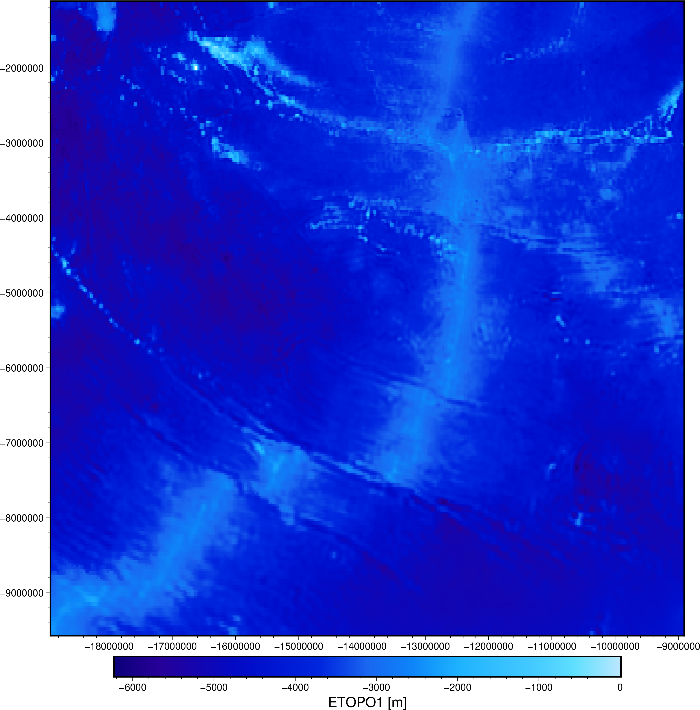
Make a cross-plot to see if there is any relationship between bathymetry and seafloor age.
plt.figure(figsize=(12, 9))
plt.plot(
grid.seafloorage.values.ravel(),
grid.topography.values.ravel(),
".",
)
plt.xlabel("Seafloor age [Myr]")
plt.ylabel("Bathymetry [m]")
plt.xlim(0, grid.seafloorage.max())
plt.grid()
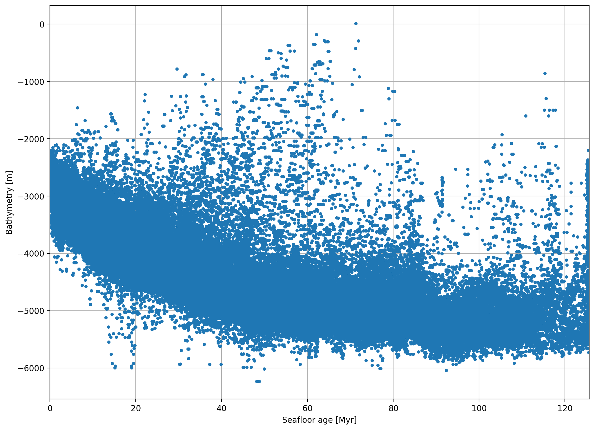
There is clearly a pattern there but it’s also very noisy, with a lot of very shallow points (all of those oceanic islands). Let’s remove the small wavelength effects of the islands to see if we can highlight the main trend better. We can do this by down-sampling both grids.
This is easier now that both are in the same xarray.Dataset since we can use the coarsen method. It will essentially perform the same blocked operation we did with Verde but it works better with grids. Let’s coarsen these grids down to about 1 degree resolution (take a mean every 6 points).
grid_coarse = grid.coarsen(easting=6, northing=6, boundary="trim").mean()
Make the plots again to see what happened.
fig = pygmt.Figure()
fig.grdimage(grid_coarse.seafloorage, cmap="inferno", projection="X25c")
fig.basemap(frame=True)
fig.colorbar(frame='af+l"Seafloor age [Myr]"')
fig.show()
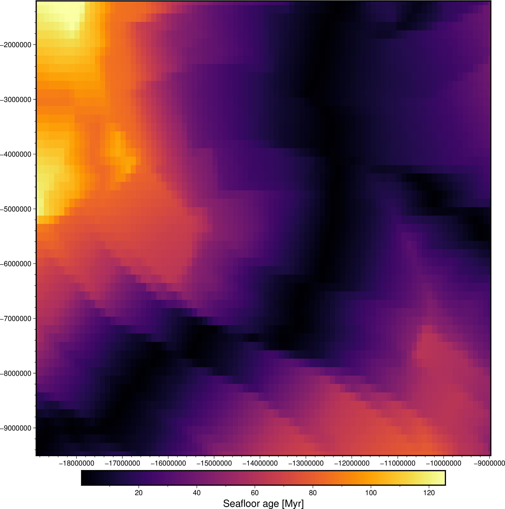
fig = pygmt.Figure()
fig.grdimage(grid_coarse.topography, cmap="etopo1", projection="X25c")
fig.basemap(frame=True)
fig.colorbar(frame='af+l"ETOPO1 [m]"')
fig.show()
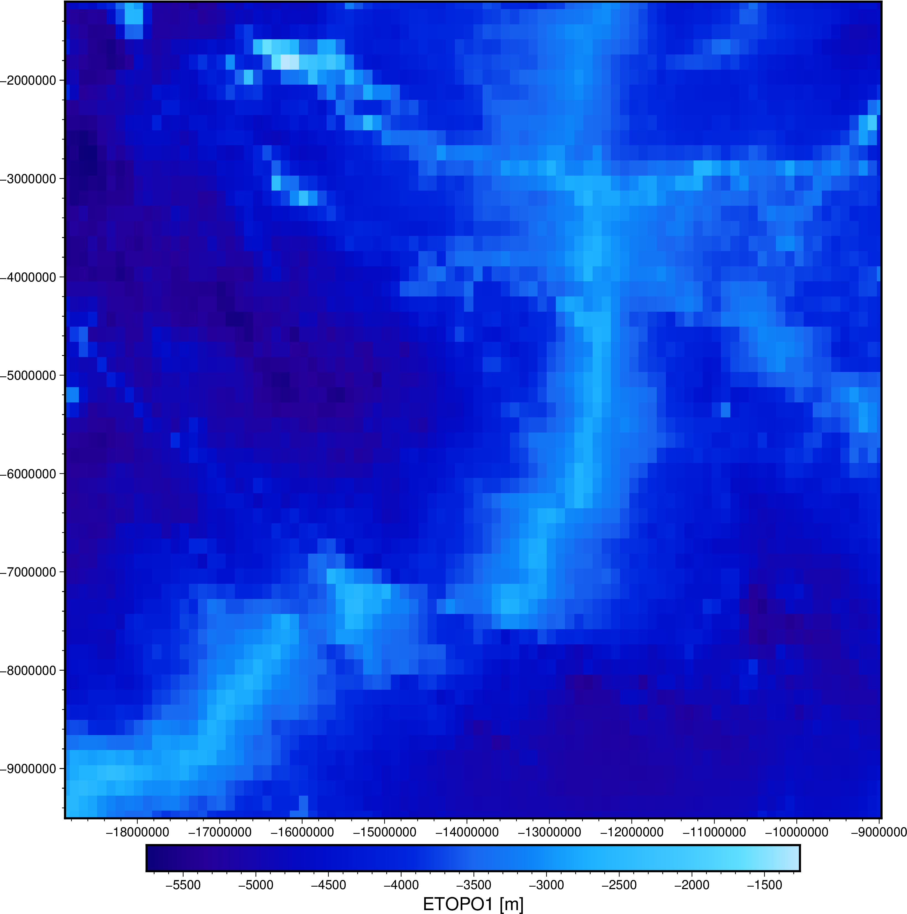
Make a cross-plot to see if there is any relationship between bathymetry and seafloor age.
plt.figure(figsize=(12, 9))
plt.plot(
grid_coarse.seafloorage.values.ravel(),
grid_coarse.topography.values.ravel(),
".",
)
plt.xlabel("Seafloor age [Myr]")
plt.ylabel("Bathymetry [m]")
plt.xlim(0, grid.seafloorage.max())
plt.grid()
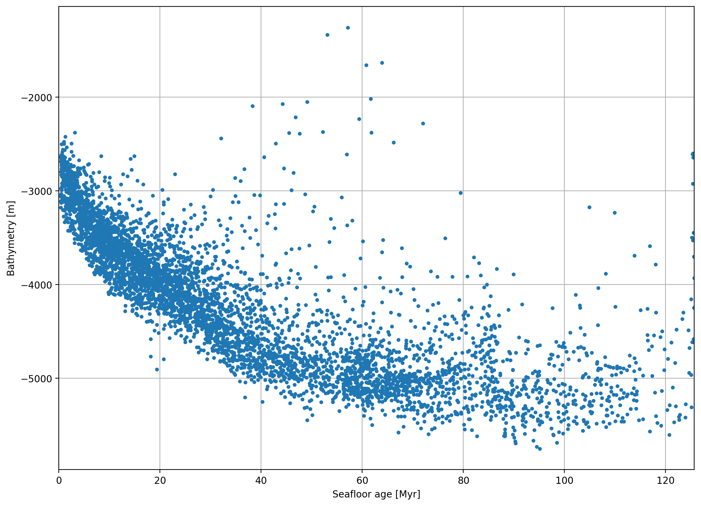
Now that the islands and other short-wavelength features have been smoothed over, the overall pattern of deeper oceanic basins as they age is clear to see.
Our next step is to see if we can model this relationship.
🍽️ The plate model
The plate cooling model describes the temperature distribution and evolution of the oceanic lithosphere, from its formation at mid-ocean ridges to its cooling as it ages and moves away from the ridge. This is a sketch of how the model is set up:

The model assumes that:
- The lithosphere is formed at the ridge and spreads symmetrically around it (so we only need to model one side) with a speed of $u$.
- The top of the lithosphere is kept at a constant temperature $T=T_0$.
- The asthenosphere and mid-ocean ridge are at a constant temperature $T=T_a$.
- The cooling happens only by vertical conduction from the lithosphere into the water column.
With this model setup, we can tread this as 1D thermal diffusion problem since we can replace the distance to the ridge ($x$) with its age ($t$). The governing differential equation for this is:
$$
\dfrac{\partial^2 T}{\partial z^2}
= \dfrac{1}{\alpha} \dfrac{\partial T}{\partial t}
$$
in which $\alpha$ is the thermal diffusivity of the lithosphere. With the boundary conditions of constant temperature $T_0$ at the surface, constant temperature $T_a$ at $z=z_L$ (the maximum lithospheric thickness), and initial condition of $T = T_a$, the solution to this equation is:
$$
T(z, t) =
T_0 + (T_a - T_0)
\left[
\dfrac{z}{z_L} + \dfrac{2}{\pi}
\sum\limits_{n=1}^{\infty}
\dfrac{1}{n}
\exp\left(-\dfrac{\alpha n^2 \pi^2 t}{z_L^2}\right)
\sin\left(\dfrac{n \pi z}{z_L}\right)
\right]
$$
ℹ️ Note: The equations used here can be found the classic book Geodynamics by Turcotte & Schubert (2014). I highly recommend going over the derivations and explanations in there.
🥠 Predicting bathymetry
We can use the plate cooling model temperature distribution above to predict bathymetry by assuming that the oceanic lithosphere is in isostatic equilibrium (which we know to be true due to the gravity disturbances). Imposing that condition and assuming that the density of the lithosphere changes as it cools by a linear coefficient of thermal expansion $\alpha_V$, we can arrive at a prediction of bathymetry for the plate cooling model:
$$
w(t) = w_r + \dfrac{\rho_m \alpha_V (T_a - T_0) z_L}{\rho_m - \rho_w} \left[ \dfrac{1}{2} - \dfrac{4}{\pi^2}
\sum\limits_{m=0}^{\infty} \dfrac{1}{(1 + 2m)^2} \exp\left(-\dfrac{t \alpha \pi^2 (1 + 2m)^2}{z_L^2}\right) \right]
$$
Let’s make a function that calculates this prediction. We’ll assume that temperatures are in $K$, distances are in $m$, ages are in $Myr$, thermal diffusivity is in $mm^2/s$, thermal expansion is in $1/K$, and densities are in $kg/m^3$.
def plate_model_bathymetry(
age,
ridge_depth,
temperature_surface,
temperature_asthenosphere,
max_thickness,
thermal_diffusivity,
thermal_expansion,
density_water,
density_mantle,
):
"""
Predicted bathymetry from the plate cooling model.
"""
# Make units compatible:
# 1e-6 converts from mm² to m²
thermal_diffusivity = 1e-6 * thermal_diffusivity
# Million years into seconds
age = 1e6 * 365.25 * 24 * 60 * 60 * age
summation = 0
for m in range(100):
summation = summation + (
1 / (1 + 2*m)**2 * np.exp(
- age * thermal_diffusivity * np.pi**2 * (1 + 2*m)**2
/ max_thickness**2
)
)
depth = -(
ridge_depth + (
density_mantle * thermal_expansion
* (temperature_asthenosphere - temperature_surface)
* max_thickness
/ (density_mantle - density_water)
)
* (0.5 - 4 / np.pi**2 * summation)
)
return depth
Now we can try to make a prediction of bathymetry and see if it matches our data. To do so, let’s assume the following parameters:
| Parameter |
Value |
| $w_r$ |
$2500\ m$ |
| $\rho_w$ |
$1000\ \frac{kg}{m^3}$ |
| $\rho_m$ |
$3300\ \frac{kg}{m^3}$ |
| $T_0$ |
$273\ K$ |
| $T_a$ |
$1600\ K$ |
| $\alpha$ |
$1\ \frac{mm^2}{s}$ |
| $\alpha_V$ |
$3\cdot10^{-5}\ K^{-1}$ |
bathymetry_plate = plate_model_bathymetry(
age=grid_coarse.seafloorage,
ridge_depth=2500,
temperature_surface=273,
temperature_asthenosphere=1600,
max_thickness=100e3,
thermal_diffusivity=1,
thermal_expansion=3e-5,
density_water=1000,
density_mantle=3300,
)
The beauty of tools like xarray and Python’s dynamic typing is that our calculation function doesn’t need to know that it’s even using xarray grid and not a single number! By passing our age as grid, we get a grid of bathymetry back. If we passed in a single number, that’s what we would get without having to change anything in the code.
Let’s make a plot of the grid of predicted bathymetry.
fig = pygmt.Figure()
fig.grdimage(bathymetry_plate, cmap="etopo1", projection="X25c")
fig.basemap(frame=True)
fig.colorbar(frame='af+l"ETOPO1 [m]"')
fig.show()
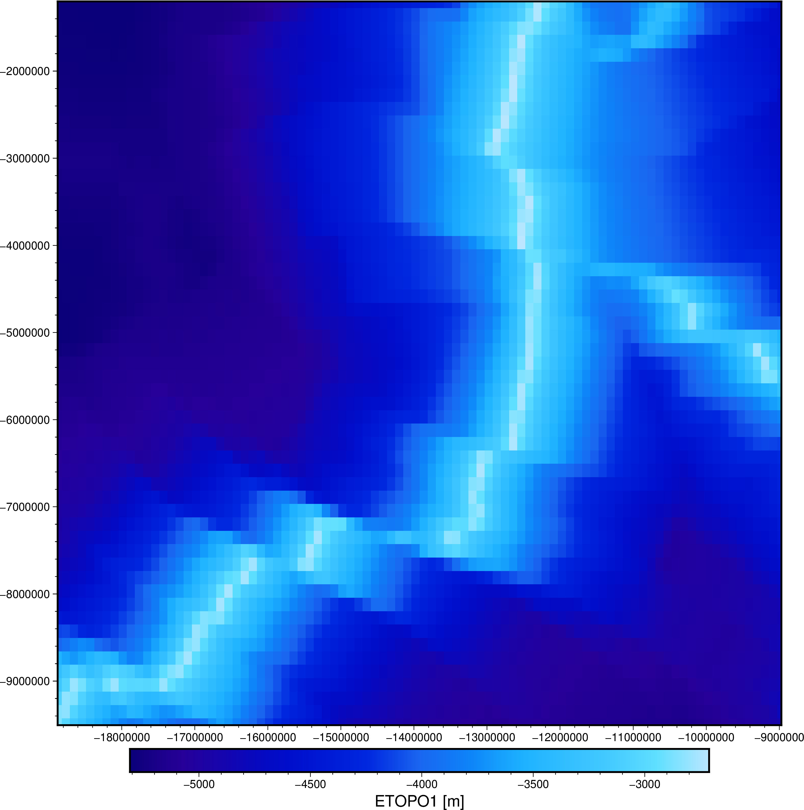
Looks sensible and visually very similar to our smoothed bathymetry grid.
Now we can check how the model predictions compare to the real observed data by plotting them side-by-side.
plt.figure(figsize=(12, 9))
plt.plot(
grid_coarse.seafloorage.values.ravel(),
grid_coarse.topography.values.ravel(),
".",
)
plt.plot(
grid_coarse.seafloorage.values.ravel(),
bathymetry_plate.values.ravel(),
".r",
)
plt.xlabel("Seafloor age [Myr]")
plt.ylabel("Bathymetry [m]")
plt.xlim(0, grid.seafloorage.max())
plt.grid()
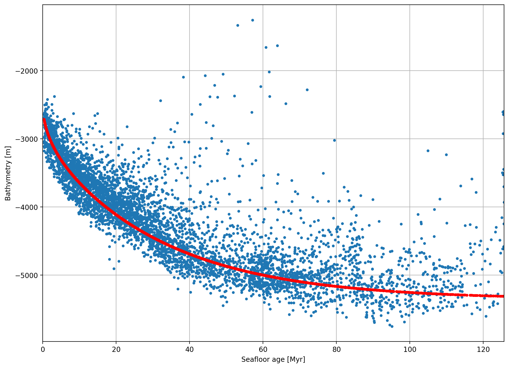
🥳 It fits! From this plot, we can see that the plate model does a very good job at predicting the increase in bathymetric depth as the oceanic lithosphere cools with age. Of course, the input parameters used have a large influence on this and I chose values that I knew would fit the data ahead of time.
💡 Ideas for you to try
That’s all we have time for here but I wanted to leave you with some ideas for things you can try to do with this code and data on your own:
- Make a function that calculates the temperature distribution with time and depth for the plate model (the first equation above) and make a plot to see if this matches what is on the Geodynamics book.
- Zoom in on different mid-ocean ridge systems around the world. Does the plate model work as well in them or is it only valid for the South Pacific? Will you have to change the input parameters to get a fit? If so, what does that mean in terms of the properties of that mid-ocean ridge system?
- Try to find the $z_L$, $\alpha_V$, etc that best fit the data through an inversion. This will be a non-linear. One way to do this would be to use
scipy.optimize.minimize_scalar to find the parameters that minimize the sum of squared differences between the data and the model predictions.
Try some of this out! I’d love to see what you come up with! Share your results and ideas by either opening an issue on GitHub or on the Software Underground Slack group.
Happy coding!